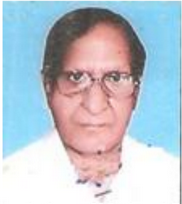

Dear Parents,
Greetings from NPS family!
Education has continued to evolve, diversify and extend its reach since the dawn of
human history when a new way has to be given to an age old process. Learning should be
a passionate, interactive process in which children are allowed to explore objectives .An
Environment that is conductive to learning is one which allows space to express
opinions, set up communication and build skills and resources. While the school is
commited in building such an infra structure ,it believes that the teaching is not
succeeded without the Parental involvrment to the same ideals and only then the magic
will unfold.
At the NPS Rajouri, we involve students with ”School with academic skills”
through delivery of individualized integrated learning programme in time with
international standard of excellence, in line with changing scenario with better learning
skills.
We thought,...... “Education is the principal mean for an individual’s growth which in turn leads to
social development of a Nation”.
Now, let me take this occasion to heartly thank the NPS Fraternity in helping to realize a
dream ... a dream of an institution where love and joy ‘ reign Supreme. Respect which is
a seed of divinity a lyric of acceptance indeed subline! Let Lives deed of great
personalities always stimulate and ennoble’s our mental lives.
From the Principal's Desk
History

Recognition/ Affiliation
The School has been recognized by the Government of Jammu and Kashmir Education
Department and affiliated to the J&K State Board of School Education up to 12 th classes vide
Govt. Order.
Registered Society and Trust
The School is also registered under Registrar of Societies under Societies Registration Act VI of
1998 No. 1304-S of 1986 vide No;
3129-RS/3498 dated :22-12-1986 as “ National Public School Society (NPS Society) and looked
over by the members of the Society from time to time. It has its own Management Committee.